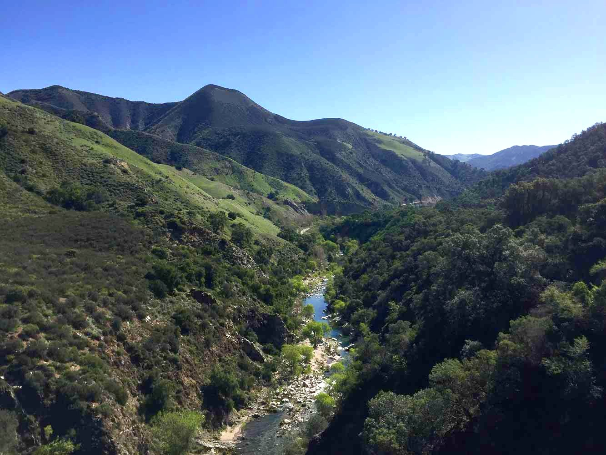
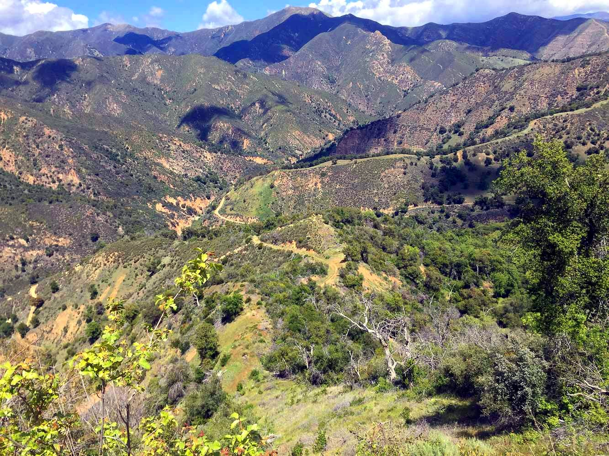
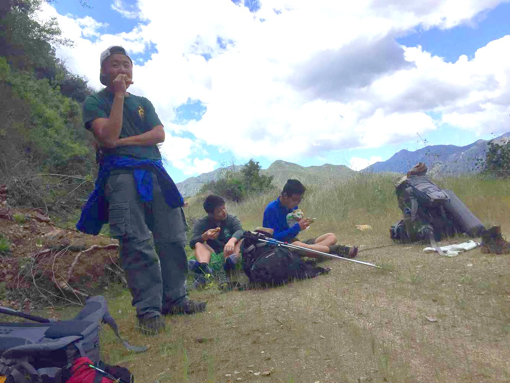
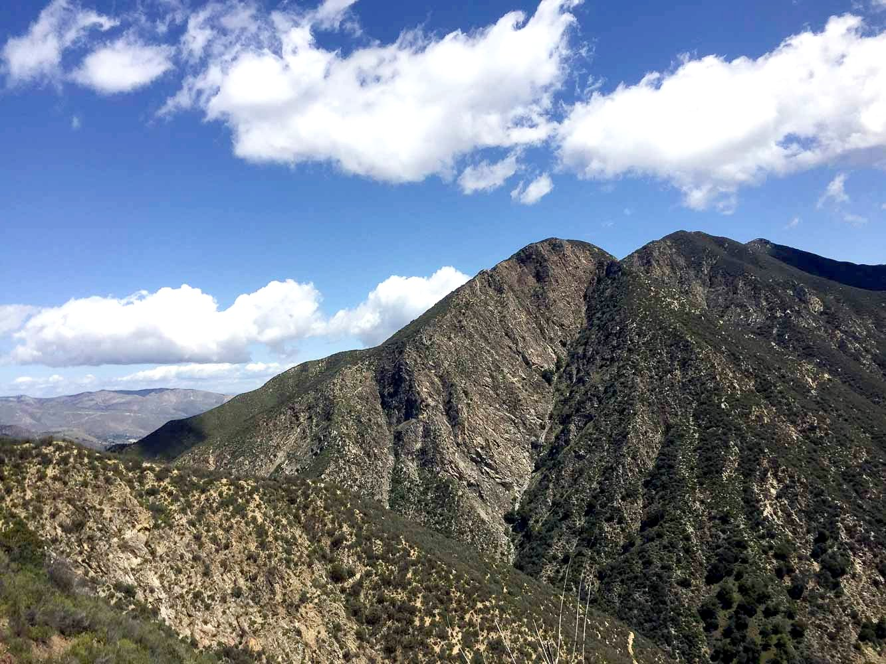
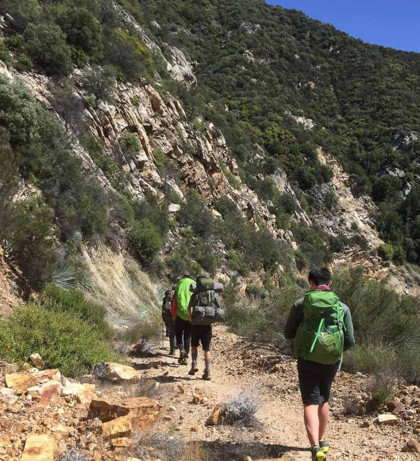
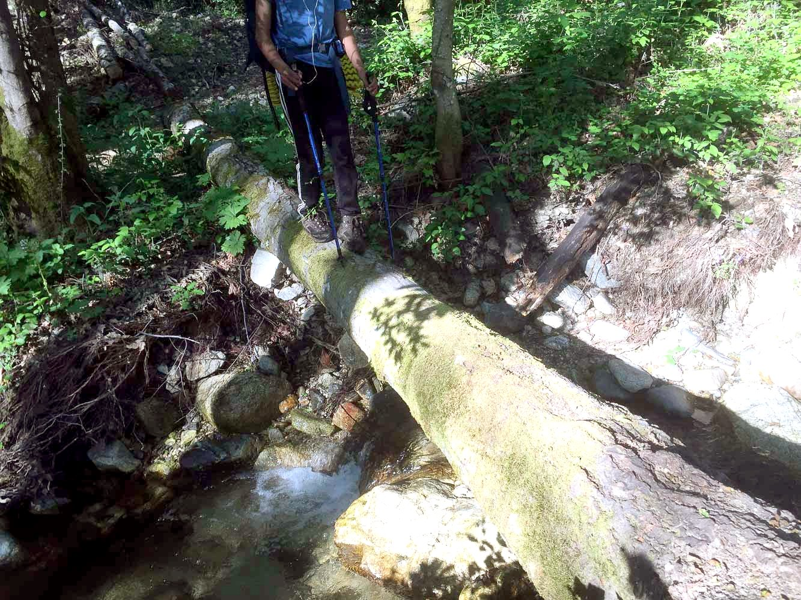

Big Sur - April 2018
Caltopo Route -- Good solid 40 mile trip over four days! Lots of bushes, poison oak, the usual Big Sur troubles... Crew members: myself, Richard, Benjamin, Hagen, Joshua, Max, Brandon, Jeffery, Forest (now at MIT!), Mr. Chen, and Mr. Lian. Many thanks to Mr. Chen and Mr. Lian for driving and serving as devil's advocate throughout the trip. The pictures on this trip report were taken by Richard, Benjamin, and Forest, for the most part.
Day 1:
We started at the Arroyo Seco trailhead on the east side of the Santa Lucia mountains. We took the Indians Road for about 13 miles south to our first night's campsite. It was really nice the first day, and it kind of just got worse day by day from there... For this reason I was in a pretty bad mood and there are few pictures of me.{kind=link}

{kind=link}
The Arroyo Seco
{kind=link}
The arroyo seco
{kind=link}
{kind=link}
Jeffery and Max

{kind=link}
{kind=link}
the most best road ever?

{kind=link}
Us loosers having lunch

{kind=link}

{kind=link}
The road got a bit dry after a while and our feet weren't feeling so well. We camped at Escondido campground, which was really developed and had a parking lot, so I guess so much for wilderness trip? We had an alright fire and it was pretty comfortable with the benches and all.
Day 2:
Next day wasn't so good? The guys had their first taste of bushwhacking a couple miles in (I myself am a "veteran" having experienced a good day and night of it before), and we lost about 3 hours looking for the trail in the evening.{kind=link}
{kind=link}
Max crossing a river
{kind=link}
"wow this is pretty real"
{kind=link}
Lost
We lost the trail an agonizing couple hundred meters from the Coast Ridge road (we could pretty much see the ocean from where we were), and it was so weird. We had just bushwhacked some pretty poor trails, so we were looking at the faintest treads and thinking, "wait this could be the trail!" when any normal person would see nothing but bushes. So when we were looking for the trail we were looking in ALL the wrong places. Only after 3 hours do we find the trail, and just in time for sunset.
{kind=link}
"Joy"
{kind=link}
I'm not sure which ocean this is, probably the Pacific. Either that or the Atlantic..

Photo from Benjamin Tang
I think we camped right on the road that night. Plenty of dark jokes about getting run over at night by some 4x4 Jeep.
Day 3:
We liked the third day quite a bit because of the nice ocean views. We were three thousand feet above the ocean, and also like three thousand feet away, so it was a very nice looking for us.{kind=link}
{kind=link}
All good things end and we were back in the bushes after a few hours. This time they came with thorns!!! I think the valley we were hiking through was filled with some kind of berry bush...
{kind=link}
ouch!
{kind=link}
Last four miles pretty pleasant aside from the burning pain in my feet
Right before we got to our campsite there was a small section where we were pretty much swimming in poison oak, and I was wearing shorts (not good!) and got a ton of it. Legs looked really bad when I got home.
Day 4:
More poison oak I guess.
{kind=link}
Like twenty river crossings like this one towards the end. (Also note Brandon listening to what is probably Pentatonix)
We had a nice in-n-out stop later to soothe our sunburns!